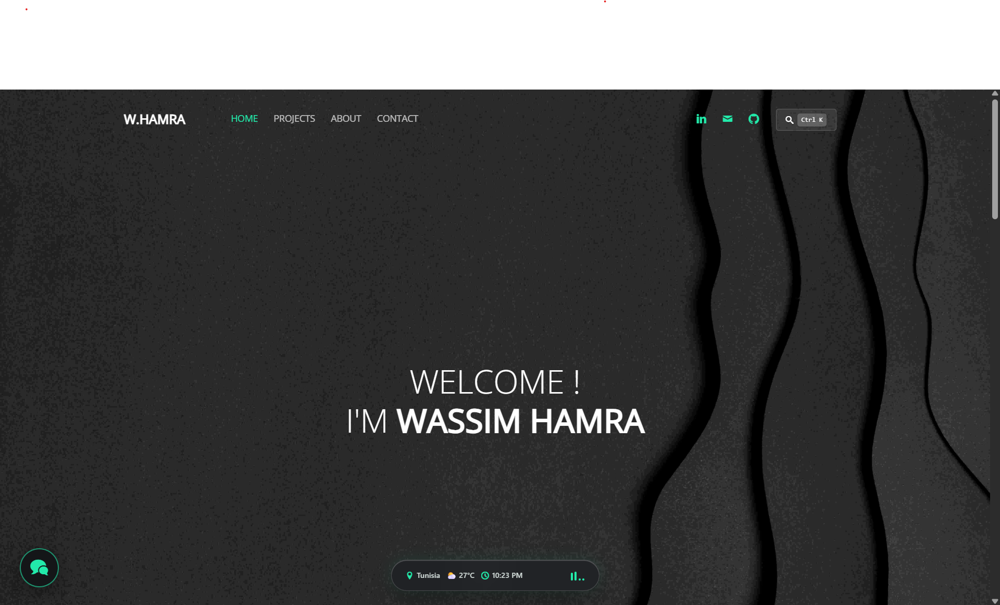

Here's the real story of how this website started and evolved into what you see right now:
I started with a clean template from uiCookies as my initial foundation, then heavily customized the HTML, CSS, and layout to build a dark-mode portfolio reflecting my personal aesthetic.
Originally, I powered the backend with Django 4.2 and Python, handling contact form submissions via smtplib and MySQL. To simplify maintenance and host for free on GitHub Pages, I later converted the entire site into a high-performance static architecture.
To replace the original Django/Heroku mail backend without maintaining a dedicated server, I integrated Web3Forms API. Messages submitted on the Contact page are processed asynchronously via AJAX and delivered straight to my inbox with instant status alerts.
Instead of manually updating project cards, the Projects page queries the GitHub REST API (https://api.github.com/users/Wassim-Hamra/repos) via JavaScript. It dynamically fetches and renders my public repositories, descriptions, tech tags, and GitHub links in real time.
Added an interactive chatbot widget floating on the bottom-left. It features glassmorphism styling, human-curated FAQ answers, and interactive prompt pills so visitors can learn about my background or ask for contact info right away.
Built a floating, see-through frosted glass Dynamic Dock (backdrop-filter: blur(32px)) at the bottom-center of the screen. It packs:
Re-architected the About Me page into two parallel tracks (Education & Internship/Work Experience), upgraded the CV download button with a neon glass glow, and turned plain lists into hover-interactive hobby cards (F1, Coding, Football, Gaming, Reading).
Integrated a fast command palette modal accessible anywhere on the site via Ctrl + K or clicking the search trigger.
I created this website to showcase my work experience, projects, and skills as an AI engineer. While LinkedIn and other professional networks serve this purpose, I felt a personal website would offer more flexibility and allow me to provide clearer descriptions of my projects. It’s also a great way to stand out and demonstrate that I can build interactive web experiences beyond core ML.
HTML5 | Vanilla CSS & Glassmorphism | JavaScript | Bootstrap | jQuery
Dynamic Dock | Lounge Audio Player | AI Chatbot Widget | Spotlight Search (Ctrl+K)
GitHub Pages (Custom Domain: wassimhamra.tech)
Git & GitHub
PyCharm
These are some of my featured projects. To explore additional projects not listed here, visit my GitHub profile.